D01
Каменный мост
Арочный каменный мост; квартал без типа и цветового знака.
Stone bridge · DelapouiteCitadels Web · подбор изображений · D01–D14
Временные заглушки для согласования спецификации. Пиктограммы показывают тему карты; финальные иллюстрации и игровые эффекты здесь не заданы.

Арочный каменный мост; квартал без типа и цветового знака.
Stone bridge · Delapouite
Плащ и скрытый кинжал как условный знак тайного заговора.
Cloak and Dagger · LorcХрустальный шар как знак прорицания; временно заменяет изображение башни.
Crystal ball · Lorc
Купольное церковное здание; условный образ резиденции, не конкретный папский дворец.
Byzantin temple · Delapouite